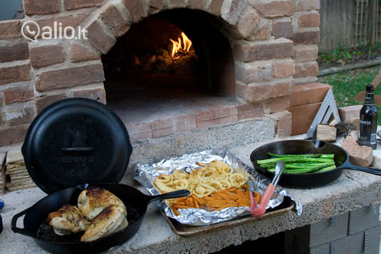
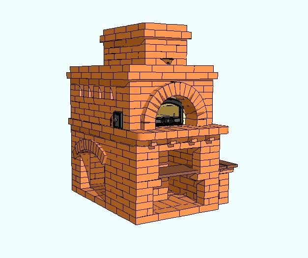

Duonkepės Internetu pigiau Žema kaina | b-a.eu

Kalba (language)
Pristatymas (shipping to)
Belarus Germany Denmark Estonia Spain France United Kingdom Ireland Italy Lietuva Latvia Norway Poland Russia Sweden Ukraine KuponaiPrekių katalogas
Baldai ir interjeras Statybinės medžiagos Buitinė technika Namai ir buitis Elektronika namams Metalai Įranga ir įrenginiai Santechnika Prekės vaikams Elektros prekės Laisvalaikio ir sporto prekės Prekės civiliams, kariams, medžiotojams Zoo prekės gyvūnams Medicina, sveikata Sodo daržo prekės Sekso prekės Kvepalai ir kosmetika Apranga, avalynė ir aksesuarai Dovanos, suvenyrai, pramogos Auto-Moto Išmanūs namai Žiūrėti visą prekių katalogą Prisijunkitearba registruokitės Apie b-a.eu Kontaktai D.U.K Kaip pirkti
EUR /
/
Pristatymas: Lietuva
Kalba (language) Lietuvių Latviešu English Pусский Pristatymas (shipping to) Belarus Germany Denmark Estonia Spain France United Kingdom Ireland Italy Lietuva Latvia Norway Poland Russia Sweden Ukraine Prekių krepšelis: 0 Parfumerija Moterims Kvepalai moterims Chanel Christian Dior Versace Hugo Boss Guerlain Lacoste Lancome Gucci Escada Giorgio Armani Serge Lutens Lanvin Moschino Chloe Lady Gaga Mexx Revlon Kenzo Calvin Klein Kosmetikos rinkiniai Kosmetika veidui Makiažo pagrindas Veido pudra Skaistalai Maskuojamos priemonės Kosmetika akims Tušai Šešėliai Akių pieštukai ir kontūrai Kosmetika lūpoms Lūpų dažai Blizgesiai Pieštukai lūpoms Kosmetika nagams Negyvosios jūros produktai Vyrams Kvepalai vyrams Chanel Christian Dior Versace Hugo Boss Lacoste Lancome Gucci Giorgio Armani Lanvin Moschino Mexx Kenzo Calvin Klein Visi kvepalai vyrams Skutimosi priemonės Losjonai, balzamai Skutimosi želė Skutimosi putos Higienos priemonės Šampūnai Dušo želė Dezodorantai/antiperspirantai Burnos higiena Muilas Kojų priežiūrai Naujas Kremai nuo saulės Dekoratyvinė kosmetika Kosmetikos rinkiniai Makeup Trading Elizabeth Arden Estee Lauder Clinique Visi rinkiniai Akių šešėliai Christian Dior Artdeco Dermacol Rimmel London Visi šešėliai akims Akių pieštukai ir kontūrai Lancome Christian Dior Rimmel London Visi akių pieštukai Akių tušai Chanel Lancome Christian Dior L´Oreal Paris Clinique Maybelline Rimmel London Visi akių tušai Makiažo pagrindas Revlon Lancome BOURJOIS Paris Christian Dior Visi makiažo pagrindai Veido pudra Clinique Lancome Visos pudros Skaistalai veidui Rimmel London Dermacol Lūpų dažai Christian Dior Max Factor Visi lūpų dažai Lūpų pieštukai Lūpų blizgesiai Dolce & Gabbana Lancome Visi blizgesiai lūpoms Maskuojamosios priemonės veidui Kosmetika nagams Dermacol Sally Hansen Priežiūra ir higiena Veido priežiūra Kremai veidui Kaukės ir serumai Paakių priežiūra Veido valikliai Asmens higiena Dezodorantai ir antiperspirantai Naujas Depiliacija Burnos higiena Intymi higiena Muilas Vonios druskos, aliejai Plaukų priežiūra Šampūnai Plaukų stiprikliai Plaukų modeliavimui Plaukų kaukės Kondicionieriai ir balzamai Plaukų dažai Viso kūno priežiūra Kūno kremai, losjonai Kūną stangrinančios priemonės Kojų priežiūra Rankų priežiūra Kūno šveitikliai Kremai ir losijonai nuo saulės nudegimų, netolygau įdegio Aromatiniai eteriniai aliejai Negyvosios jūros produktai Negyvoji jūra kūnui Kūno losjonai, kremai, sviestai Dušo želė, šveitikliai Papildomos, spec. priemonės Negyvoji jūra plaukams Plaukų balzamai, kaukės Negyvosios jūros šampūnai Negyvoji jūra veidui Paakių zonai Veido kremai, kaukės Veido valymui Papildomos negyvosios jūros priemonės Baldai Svetainės baldai Sekcijos Sofos, sofos-lovos Minkšti kampai Foteliai ir pufai Svetainės komodos Svetainės staliukai TV staliukai Lentynos Miegamojo baldai Miegamojo lovos Čiužiniai Miegamojo spintos Miegamojo baldų kolekcijos Virtuvės baldai Virtuviniai komplektai Virtuvinės spintelės Virtuviniai stalai Virtuviniai stalviršiai Virtuvės baldų priedai Vonios baldai Vonios baldų kolekcijos Vonios spintelės Sisteminiai baldai Šiuolaikiniai sisteminiai baldai Klasikiniai sisteminiai baldai Jaunuolio baldai Jaunuolio baldų kolekcijos Jaunuolio baldų komplektai Jaunuolio kėdės Valgomojo baldai Valgomojo stalai Valgomojo kėdės Prieškambario baldai Prieškambario kolekcijos Prieškambario komplektai Prieškambario spintos Batų dėžės Kabyklos Dekoratyviniai aksesuarai Paveikslai Baldai vaikams Vaikiškos lovos Spintos vaikams Stalai vaikams Kėdės vaikams Lentynos vaikams Kabyklos vaikams Lauko baldai Lauko stalai Lauko kėdės Įvairūs lauko baldai Lauko baldų komplektai Medžio masyvo baldai Mediniai virtuvės baldai Mediniai miegamojo baldai Mediniai valgomojo baldai Mediniai prieškambario baldai Mediniai staliukai Kiti mediniai baldai Biuro baldai Biuro baldų kolekcijos Biuro kėdės Baro ir restorano baldai Baro, restorano stalai Baro, restorano kėdės Statyboms Statybiniai blokeliai ir plytos Akyto betono blokeliai Silikatiniai blokeliai Silikatinės plytos Keramzitiniai blokeliai Keraminiai blokeliai Keraminės plytos Klinkerinės plytos Betono blokeliai Pamatiniai blokeliai Statybinės sąramos Stogų ir sienų dangos Beasbestinis šiferis Bituminės čerpelės Bituminiai lakštai PVC lakštai Prilydomos dangos Betoninės čerpės Keraminės čerpės Profiluota skarda Cedral apkala Sandwich plokštės Komplektavimo detalės Statybiniai mišiniai Cementas Mūro mišiniai Statybiniai klijai Gipsas Glaistas Išlyginamieji mišiniai Tinko mišiniai Cheminiai priedai Šilumos izoliacija Akmens vata Stiklo mineralinė vata Putų polistirenas Ekonominis polistirolas Termoizoliacinės plokštės Šilumos izoliacinis tinkas Kita šilumos izoliacija Statybinės plokštės Gipso kartonas (GKP) Orientuotų skiedrų plokštės (OSB) Fanera Cemento drožlių plokštės (CDP) Medžio drožlių plokštės (MDP) Medžio plaušo plokštės (MPP) Tvoros Tvorų segmentai Stulpai tvoroms Vartai Tvorų aksesuarai Tinklai tvoroms Skaldytų blokelių tvoros Betoninės tvoros Skardinės tvoros Kaminų sistemos Schiedel kaminai Fibo kaminai Kerapor kaminai Aplinkos tvarkymo elementai Grindinio trinkelės Klinkerio trinkelės Šaligatvio plytelės Kelio ir vejos bordiūrai Šulinių žiedai Dekoratyviniai gaminiai Apdailos medžiagos Apdailos plytelės Grindų apdailos medžiagos Sienų apdailos medžiagos Lubų apdailos medžiagos Apdailos sujungimo profiliai Dažai ir glaistai Emulsiniai dažai Lakai Akriliniai dažai Aliejiniai dažai Grindų dažai Emaliniai dažai Aerozoliniai dažai Dažymo įrankiai Gruntai Glaistai Rūdžių surišėjai, modifikatoriai Medžio tvirtinimo elementai Vinys Medsraigčiai, smeigės Kabliai (pusiaukilpiniai, įsukami) ir kilpos Sraigtai Din 7981, cinkuoti Sraigtai Din 571, cinkuoti Metalo tvirtinimo elementai Varžtai Veržlės Poveržlės Sraigtai Kniedės Vielokaiščiai Skiedikliai ir valikliai Acetonas Nefrazas Nitroskiedikliai Terpentinas Vaitspiritas Žibalas Skiedinio dėmių valikliai Specialios paskirties valikliai Tinklai, lynai, vielos, grandinės Statybiniai tinklai Vieliniai lynai, vielos Grandinės Plieninių lynų ir grandinių tvirtinimo elementai Tvirtinimo elementai Metalo profiliai Kaiščiai GKP tvirtinimo elementai Šilumos izoliacinių medžiagų tvirtinimo elementai Stogų, sienų tvirtinimo elementai Langai, durys, palangės, laiptai Stoglangiai Vidaus ir lauko durys Laiptai Durų stogeliai Palangės Plėvelės stogams ir sienoms Antikondensacinė plėvelė Difuzinė plėvelė Garo izoliacinė plėvelė Priešvėjinė plėvelė Apsauginės medžiagos Statybinė mediena Hidroizoliacija, hermetikai, impregnantai Poliuretaninės putos Pistoletai hermetikams Putų pistoletų valikliai Hidroizoliacinės medžiagos Impregnantai Silikoniniai hermetikai Akriliniai hermetikai Ugniai atsparūs hermetikai Bituminis siūlių užpilas Vandens suvedimo sistemos Lietvamzdžiai ir latakai Paviršinio vandens surinkimas Sodui, daržui Sėklos Daržovių, vaisių Gėlių Prieskonių Šiltnamiai Sodo įrankiai Grąžtai Grėbliai Įrankiai miškui Įrankiai vaikams Karučiai Kastuvai Kirviai Peiliai Pjūklai Šakės Sekatoriai Sodo žirklės Krūmapjovės ir trimeriai Lapų pūstuvai Mini traktoriai Moto blokai Pjūklai (benzininiai, elektriniai) Šakų, malkų smulkintuvai Ūkinės prekės Kopėčios Šluotos Kitos Žoliapjovės, vėjapjovės Fontanai Prekybinės palapinės Sniego valymo technika Sniego kastuvai Sniego stumdytuvai Sniego valytuvai Laisvalaikis Prekės sportui Prekės turizmui Vandens gaiva Prekės žvejybai Muzikos instrumentai Motociklininkui Rimtesniam modeliavimui Vaikams Namams Jai ir Jam Išpardavimai Akcijos Prekių katalogas Mano meniu Daugiau +370 699 62969 8:00-17:00 d.d. info@b-a.eu Buitinė technika Smulki buitinė technika Virtuvės technika Duonkepės Išvalyti visus filtrus Galingumas(maksimalus) Nenurodyta (1) Spalva Nenurodyta (1) Taip pat siūlome: Elektrinės keptuvės, vaflinės Elektriniai puodai Elektriniai virduliai Griliai kepsninės Kavamalės Kavos virimo aparatai Kokteilinės Maisto/ vaisių džiovintuvai Mėsmalės, trintuvės Plaktuvai plakikliai mikseriai Skrudintuvai, gruzdintuvės Sulčiaspaudės Sumuštinių keptuvai Virtuviniai kombainai Virtuviniai peiliai,pjaustyklės, galąstuvaiDuonkepės internetu
Duonkepė Beper BC.130
Kaina: 93.65 € Duonkepės - šiuo metu Jūs esate šioje grupėje. Duonkepės internetu pigiau. Gera kaina. Duonos kepimo krosnelės su nelimpančiu paviršiumi, pagamintos iš nerūdijančio plieno. Duoną galima kepti įvairių formų. Akcijos Kaina perkant internetu šioje prekių grupėje duonkepės tai puikus pasirinkimas kiekvienam klientui. Grupėje virtuvės technika visada yra galimybė įsigyti prekes pigiau. Nepatingėkite pasiteirauti geresnės kainos ir mūsų vadybininkai esant galimybei pasiūlys Jums pigiau duonkepės grupės prekes. Lankomiausios šioje grupėje virtuvės technika prekės yra šios - melitta 1017-05 balt. enjoy therm kav. a; virtuvinis kombainas philips hr 7766/13; simeo fc630 - spurgų keptuvė; virdulys delonghi kbov2001gr; elektrinis virdulys morphy richards kettle 100102 standard, stainless steel, steel blue, 3000 w, 360° rotational base, 1.5 l; virtuvinis kombainas tefal qb 625d38; melitta 100501 balt. cremio plaktuvas; elektrinis puodas forme fmc-5101; duonkepė bomann cb 594; elektrinis virdulys-termosas graef wk61eu, baltas;Pristatymas visoje Lietuvoje - Vilniuje, Kaune, Klaipėdoje, Šiauliuose, Panevėžyje, Alytuje, Marijampolėje, Mažeikiuose, Jonavoje, Utenoje, Kėdainiuose, Telšiuose, Visagine, Tauragėje, Ukmergėje, Plungėje, Kretingoje, Šilutėje, Radviliškyje, Palangoje, Gargžduose, Druskininkuose, Rokiškyje, Biržuose, Elektrėnuose, Garliavoje, Kuršėnuose, Jurbarke, Vilkaviškyje, Raseiniuose, Anykščiuose, Lentvaryje, Grigiškėse, Naujojoje Akmenėje, Prienuose, Joniškyje, Kelmėje, Varėnoje, Kaišiadoryje, Pasvalyje, Kupiškyje, Zarasuose.
Buitinė paprasta ir pigi duonkepė sugrąžino šviežios duonos kvapą į namus.Kokios duonkepės populiarios internete?
Kad nėra nieko gardžiau už namie keptą duoną, tikriausiai nepaprieštaraus nė vienas. Bet tenka pripažinti, jog šio gardumyno šeimininkės ilgą laiką nekepė – esą, per sudėtinga. Juk kur kas paprasčiau nueiti į parduotuvę ar kepyklėlę ir nusipirkti duonos, tiesa? Tačiau daugelis pirktinių kepalėlių nė iš tolo neprimena tikros naminės duonos – tokios, kokią rytais kai kuriems, vos atsikėlus, tekdavo ragauti pas močiutes kaime. Ir tik prieš gerą dešimtmetį, atsiradus modernioms duonkepėms, maksimaliai supaprastinusioms ir sutrumpinusioms visą duonos kepimo procesą, šimtmečiais tobulintas amatas vėl atgimė.
Šiuolaikinės duonkepės internete nė trupučio nepanašios į močiučių naudotas krosnis, nereikia čia ir tešlos minkyti gerą valandą ar duonos pašauti ant ližės – būtent dėl to šiuolaikinės, savo laiką taupančios ir skaičiuojančios moterys ir ryžosi duoną kepti namuose. Duoną išsikepsite kompaktiškoje ir virtuvės neužgriozdinančioje paprastoje buitinėje pigioje duonkepėje. Duonkepės turi ir atskirus skyrelius, į kuriuos reikia supilti visus reikiamus produktus – miltus, sėklas, raugą, vandenį ir t. t. Beje, jei mėgstate duoną su traškia ir stora pluta, taip pat galėsite nustatyti kepimo funkciją, o jei stora pluta nepatinka, duoną reikės kepti šiek tiek trumpiau.
Norint išsikepti šviežios duonos, neteks keltis vos saulei prašvitus – sudėjus produktus iš vakaro, galima nustatyti laiką, kada duonkepė turėtų įsijungti ir pradėti kepti duonelę. Jei šeima didelė, galėsite iškepti didelį kepalą, kurio užteks net kelioms dienoms. O jei duonos valgytojų nėra daug, pakaks ir plonesnio, mažesnio kepaliuko. Tiesiog įdėkite perpus mažiau produktų.
Kiek kainuoja duonkepės internete?
Duonkepių kainas lengvai sužinosite apsilankę elektroninėje parduotuvėje b-a.eu . Duonkepių kainos prasideda nuo maždaug 70 eurų, tačiau kokybišką ir funkcionalią duonkepę galite įsigyti už 120-150 Eur, yra ir brangesnių duonkepių, pasižyminčių ypatinga kokybe ir tobuliausiomis funkcijomis. Tačiau, nors suma atrodo nemaža, duonkepė vidutiniškai turėtų atsipirkti per vienerius-dvejus metus naudojimo.
Skaičiuojama, kad, sudėjus visas sąnaudas, duonos kepalas vis tiek kainuos apie dukart pigiau nei parduotuvėje.
Gardžiausia naminė Ciabatta
Ciabatta – tai labai gardi itališka duonelė, kurios galima lengvai išsikepti namuose. Jai reikės:
300 ml drungno vandens;
25 g įprastų mielių (jei renkatės sausas, jų prireiks 7 g);
1 šaukšto rudojo cukraus (jei neturite, tiks ir įprastas);
1 a. š. jūros druskos (taip pat tiks tokia, kokios turite namuose);
3-4 šaukštai alyvuogių aliejaus,
Apie 400 g. miltų.
Sumaišyti visus ingredientus, išskyrus miltus. Tuomet po truputį maišant vis berti miltų tol, kol masę dar įmanoma pamaišyti šaukštu. Tešlą galima ir atsargiai paminkyti. Beje, visą šį procesą gali atlikti pati duonkepė. Jei minkysite savarankiškai, tuomet, suformavus rutulį, tešlą valandai reikia dėti į duonkepę, leisti pakilti ir jau galima kepti (kepimo trukmė – 20-30 min).
Duonkepės - duonos kepimo krosnelės duonos kepimą padarė prieinamu ir įprastu reikalu
Jei anksčiau duonos kepimas, buvo tikras menas, tai dabar viskas itin paprasta. Tereikia į atitinkamus duonos kepimo krosnelės skyrelius supilti pasirinktų produktų ir apie duoną kelioms valandoms galėsite pamiršti, kol jus pašauks gardus kvapas ir aparato pyptelėjimas. Jokio rūpesčio, ar tinkamai įšilusi krosnis, ar pakankamai iškilusi tešla. Net ir plutos spalvą bei storį lems ne jūsų sumanumas, o vieno mygtuko spustelėjimas.
Duonkepė, pati išmaišo tešlą (veikia gana tyliai), leidžia jai pastovėti, tada, sukūrusi idealią temperatūrą rūgimo procesams vykti, tešlą pakildina. Pakilusi tešla vėl išmaišoma ir kepama. Iškepusiai duonai leidžiama palengva atvėsti bei susigulėti. Po visų procedūrų ant stalo atsiranda gardus šviežias kepalas.
Visa procedūra užtrunka ilgiau nei 4 valandas. Tiesa, dauguma duonkepių turi greitesnio režimo programą, kuri kepimo laiką sutrumpina daugiau nei du kartus. Tik tereikia įdėti šiek tiek daugiau mielių.
Yra galimybė visus produktus supilti iš anksto ir krosnelę užprogramuoti taip, kad duona būtų iškepta tą valandą, kai sėdatės prie stalo pusryčiauti arba grįžtate iš darbo. Beje, kepalo dydį taip pat galima reguliuoti savo nuožiūra, dedant daugiau arba mažiau receptūroje nurodytų produktų.
Paskaičiuota, kad naminė duona kainuoja maždaug du kartus pigiau nei pirktinė, net ir su produktų bei elektros sąnaudomis. Mat daugiausia elektros energijos duonkepė sunaudoja būtent kepimo metu, o tol, kol tešla maišoma, minkoma ir kildinama, elektros sąnaudos minimalios.
Duonkepėse galima kepti ne tik klasikinę juodą ar baltą, bet ir sveikuolišką, su sėlenomis, įvairiais grūdais, riešutais, šviežiais ir džiovintais vaisiais ar daržovėmis, duoną. Kepant galima rinktis tiek kvietinių, tiek ir grikių, ryžių, kukurūzų, avižinių miltų ar jų mišinį. Jose galima ne tik kepti duoną, bet ir pasigaminti kuo puikiausiai suminkytos tešlos (dauguma šeimininkių tešlos minkymą vadina pačiu nemaloniausiu procesu ruošiant kepinius) bandelėms, koldūnams, picos paplotėliams, išvirti uogienės, kompoto, kisieliaus.
Gardžios ir skalsios Jums naminės duonos
Apie mus D.U.K Garantijos ir grąžinimas Prekių pristatymas Kontaktai Partneriai Reklama Prekių istorija Sales and Export © 2010-2020 b-a.eu. Visos teisės saugomos.
Erikab-a.eu konsultantė Sveiki, turite klausimų?
Mes Jums padėsime!
Parašykite man el. paštu: info@b-a.eu × Erika
b-a.eu konsultantė Sveiki, turite klausimų?
Mes Jums padėsime!
Parašykite man laišką el. paštu: info@b-a.eu Uždaryti
